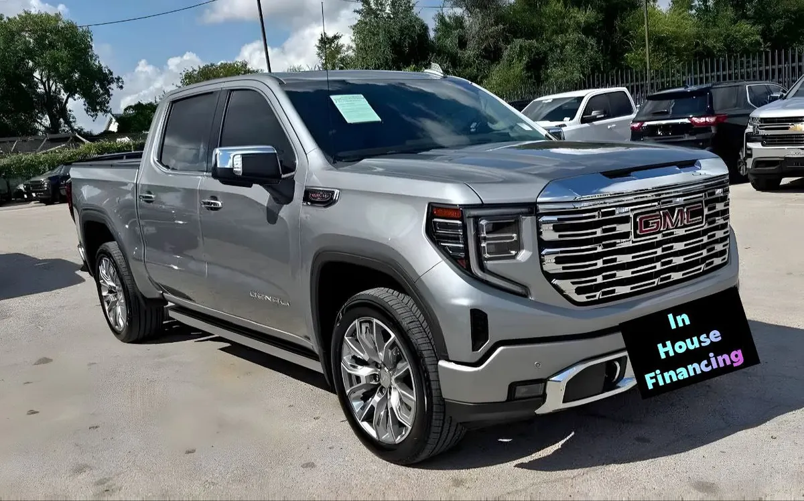

Troca Gris ID CCH-515
2025 GMC Sierra 1500 Denali

1/4- Año
- 2025
- Millas
- 3,000
- Tipo
- Troca
Ideal para
Para quien necesita una troca para trabajo y para el día a día.
Año, millas y características salen de los datos del inventario; confirma los datos exactos de esta unidad con el dealer. Esta ficha no muestra precios: el dealer los da por escrito.
Datos generales
| Año | 2025 |
|---|---|
| Marca | GMC |
| Modelo | Sierra 1500 Denali |
| Tipo | Troca |
| Color | Gris |
| Millas | 3,000 millas |
| Tracción | Por confirmar |
Especificaciones del modelo
| Motor | varía según unidad: Sierra 1500 (2.7L Turbo I4 estándar) o Sierra 2500HD (6.6L V8 gas / 6.6L Duramax diésel) |
|---|---|
| Potencia | varía según unidad: 2500HD 6.6L V8 gas 401; Duramax diésel 470 |
| Torque | varía según unidad: 2500HD gas 464 lb-pie; Duramax diésel 975 lb-pie |
| Transmisión | Automática 10 velocidades (Allison en 2500HD) |
| Tracción del modelo | 4x2 / 4x4 (varía según unidad) |
| Consumo (MPG) | Varía según unidad |
| Combustible | Gasolina / diésel (según unidad) |
| Remolque máximo | 18500 (2500HD AT4X diésel, aproximado) |
| Asientos | 6 |
| Carrocería | Pickup |
Datos típicos de este año y modelo, tomados de fuentes públicas (fabricante, KBB, Edmunds). El motor, la tracción y el equipamiento exactos de esta unidad los confirma el dealer.